Wyrmdesk Handbuch
Werkzeuge für die Spielleitung am Spieltisch: Kampagne vorbereiten, Kämpfe führen, Karten auf den Beamer bringen, und Spieler erstellen ihre Charaktere selbst.
1. Überblick
Wyrmdesk besteht aus vier Teilen, die zusammenarbeiten. Die ersten drei nutzt die Spielleitung, den vierten die Spieler.
Kampagnenbuch, Combat Tracker und Battlemap teilen sich eine Datenbank. Ein Charakter, der im Tracker Schaden nimmt, hat diesen Schaden auch auf seinem Charakterblatt und auf der Karte. Oben in jeder Kopfzeile wechselst du mit 📖 Kampagnenbuch · ⚔ Kampf · 🗺 Karte zwischen den drei Teilen. Die gewählte Kampagne ist in allen dreien dieselbe.
Es gibt zwei Arten von Seiten:
- Seiten für die Spielleitung: alles, was du vorbereitest und steuerst. Hier stehen auch Geheimnisse und Notizen.
- Anzeigen für die Spieler: Beamer-Bild, Kampfreihenfolge, Handouts und Charakterblätter auf Handy oder Tablet. Sie zeigen nur, was die Spieler sehen sollen.
Die Oberfläche gibt es auf Deutsch und Englisch. Die Sprache wählst du oben rechts in jeder Kopfzeile. Die Wahl gilt für den ganzen Browser.
2. Installation
3. Erste Schritte
Eine Kampagne anlegen
Beim ersten Öffnen zeigt das Kampagnenbuch + Neue Kampagne. Gib einen Namen ein und wähle, in welcher Welt die Kampagne spielt:
- Forgotten Realms: mit dem Kalender von Harptos.
- Eigene Welt: eigene Monate und Zeitrechnung.
- Ohne Kalender: freie Datumsangaben.
Weitere Kampagnen legst du später unter ⚙ Einrichtung → Kampagne → + Neue Kampagne… an. Oben in der Kopfzeile wechselst du zwischen ihnen.
Die Bibliothek füllen
Klassen, Völker, Hintergründe, Zauber, Monster und Gegenstände kommen aus der Bibliothek (Menüpunkte unten links im Kampagnenbuch). Sie gilt für alle Kampagnen. Auf jeder dieser Seiten lassen sich die frei verfügbaren Regelinhalte (SRD) mit einem Klick von Open5e importieren. Danach kannst du Einträge ergänzen oder eigene anlegen. Mehr dazu unter Bibliothek.
Der typische Ablauf
- Kampagne anlegen und die Bibliothek füllen.
- Spieler erstellen ihre Charaktere in der Charaktererstellung, du übernimmst sie ins Kampagnenbuch.
- Sessions vorbereiten: NPCs, Orte, Quests und Encounter anlegen.
- Am Spielabend: Handouts und Karte auf den Beamer, Kämpfe im Tracker oder auf der Karte führen.
- Nach dem Spiel: Rückblick schreiben, Einträge den Spielern freigeben.
4. Kampagnenbuch
Das Kampagnenbuch ist der Kern von Wyrmdesk. Links steht die Leiste mit den Bereichen (Sessions, Journal, Zeitleiste, Gruppe, NPCs, Orte …), daneben die Liste des gewählten Bereichs und rechts die Seite des gewählten Eintrags. Die Startseite zeigt die nächste und die letzte Session, offene Quests und zuletzt geänderte Einträge.

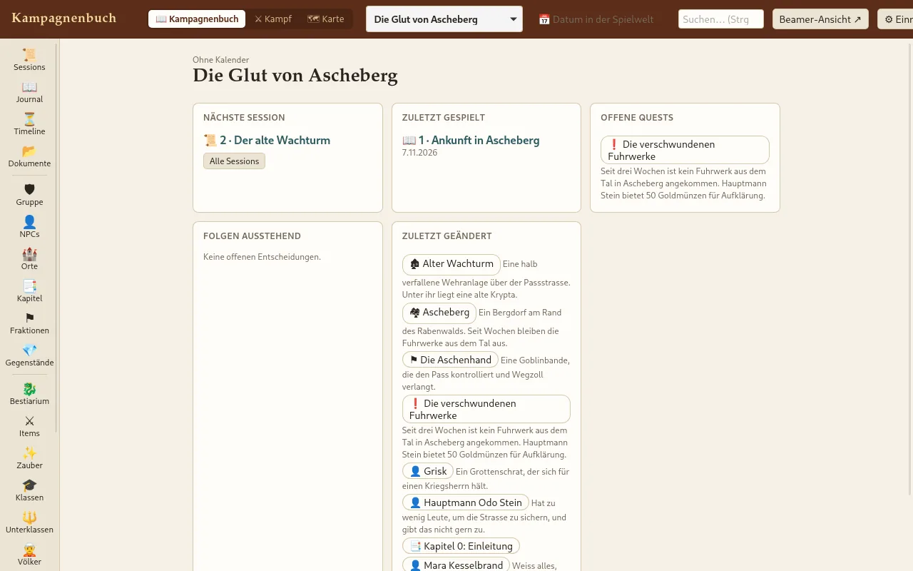
Sessions
Eine Session hat drei Teile, oben als Reiter:
- Vorbereitung: deine Notizen für den Abend. Hier verknüpfst du auch die Encounter aus dem Combat Tracker. Ein Klick auf ▶ Anzeigen schickt einen Encounter auf die Kampfanzeige.
- Am Spieltisch: kurze Notizen während des Spiels. Aus einer Notiz wird mit einem Klick ein neuer NPC oder Eintrag.
- Rückblick: was passiert ist, für dich und die Spieler.
Der Status wechselt von geplant zu gespielt. Gespielte Sessions erscheinen im Journal, Ereignisse in der Zeitleiste. Unter Beteiligt sammelt die Seite alle Einträge, auf die die Session verweist.

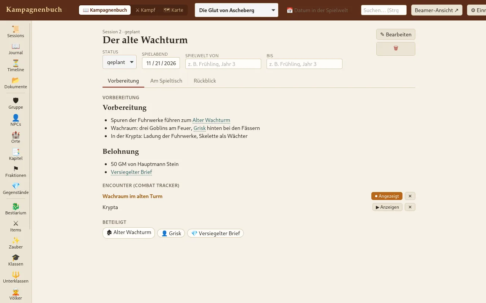
NPCs, Orte, Quests, Fraktionen, Gegenstände
Jeder Eintrag hat ein Bild, eine Kurzbeschreibung, einen Text und Geheimnisse (nur DM). Je nach Art kommen passende Felder dazu: ein NPC hat Rolle, Haltung, Status und Aufenthaltsort, ein Ort eine Art (Dorf, Taverne, Ruine …) und liegt in einem anderen Ort, eine Quest hat einen Auftraggeber und einen Status.

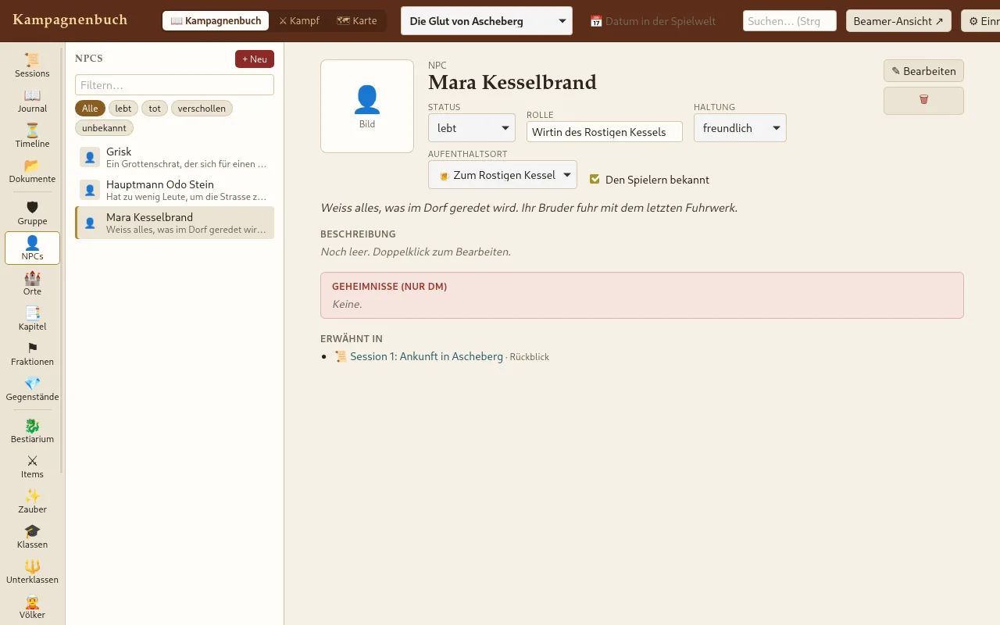
Verweise: Schreibst du im Text [[, schlägt das Kampagnenbuch Einträge vor. So wird aus [[Mara Kesselbrand]] ein Link. Jede Seite zeigt unten unter Erwähnt in, wo sie verlinkt ist.
Den Spielern bekannt: Neue Einträge sind zunächst geheim. Mit dem Schalter Den Spielern bekannt gibst du sie frei, sobald die Gruppe davon erfahren hat.

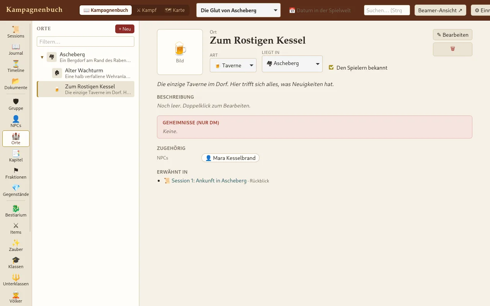

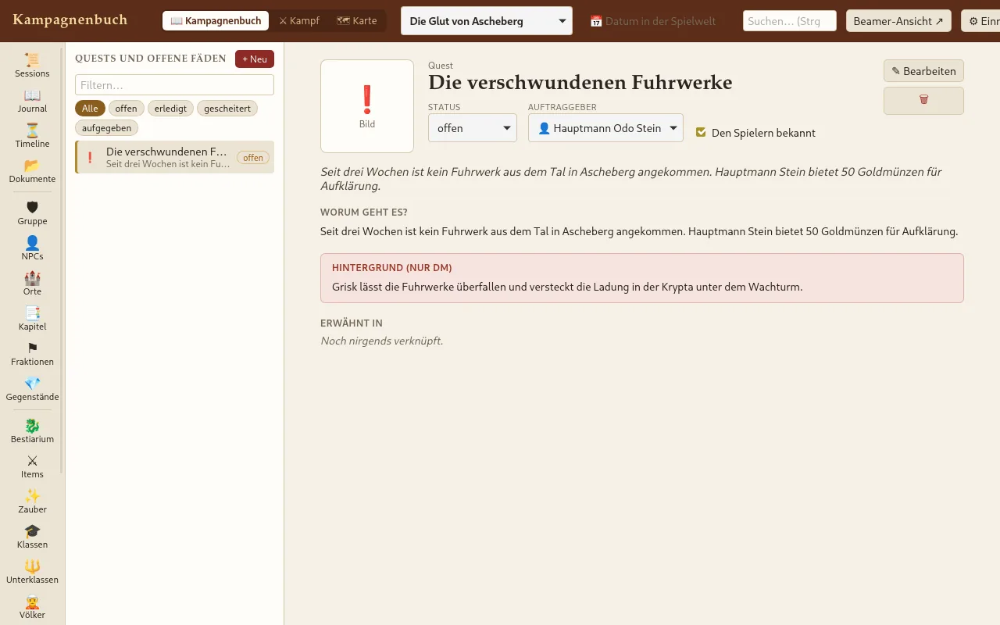
Handouts und Beamer
Ein Handout ist ein Bild oder Text für die Spieler, etwa ein Brief oder eine Karte. Mit 📽 Auf Beamer zeigen erscheint es auf der Beamer-Ansicht, mit Text mitzeigen auch sein Text. Jedes Bild eines Eintrags lässt sich so zeigen. Gezeigte Einträge gelten danach als den Spielern bekannt.

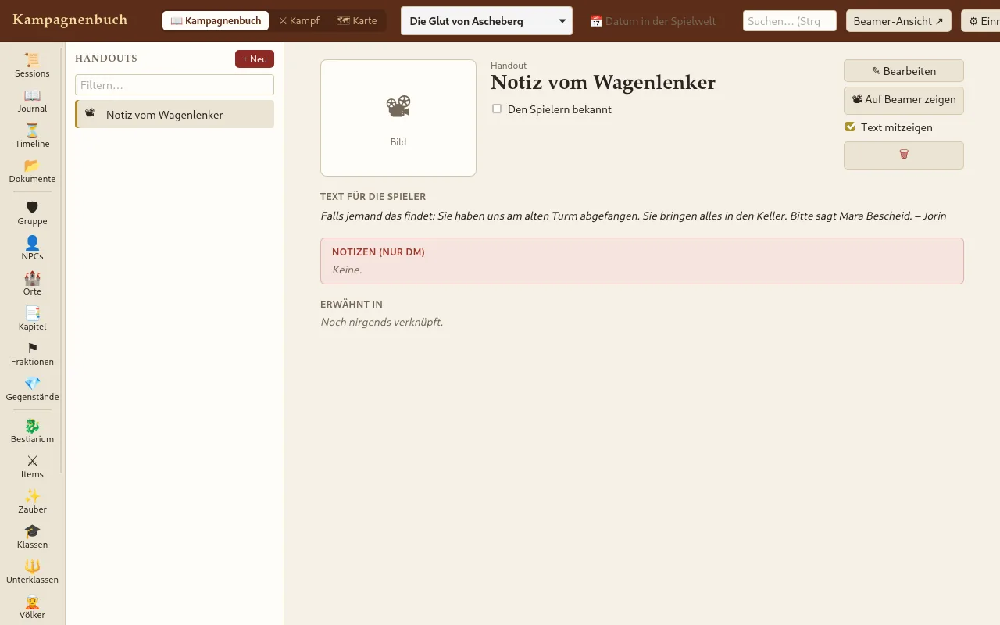
Gruppe und Charakterblätter
Unter Gruppe stehen die Spielercharaktere mit vollem Charakterblatt. Das Blatt rechnet Rüstungsklasse, Angriffe, Rettungswürfe, Fertigkeiten und Bewegung nach den Regeln aus. Ausrüstung legst du im Inventar mit dem Punkt links an, Zauber kommen aus der Bibliothek. ⬆ Stufenaufstieg führt Schritt für Schritt durch die nächste Stufe.
Trefferpunkte gehören zum Charakter. Ob sie im Tracker, auf der Karte oder auf dem Blatt geändert werden: überall steht derselbe Wert.

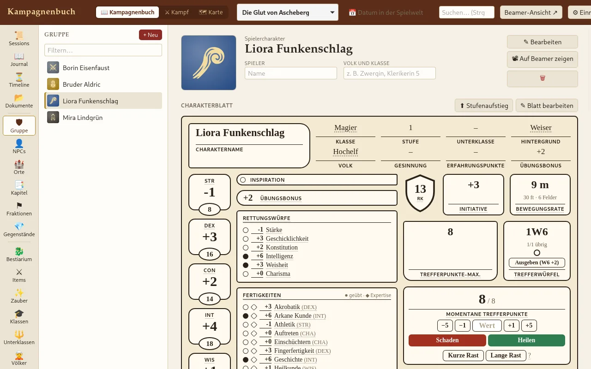
Bibliothek
Die Bibliothek umfasst Bestiarium, Items, Zauber, Klassen, Unterklassen, Völker, Hintergründe und Talente. Sie gilt für alle Kampagnen. Jede Seite kann:
- die frei verfügbaren SRD-Inhalte von Open5e importieren (einzeln über die Suche oder alle auf einmal),
- eigene Einträge anlegen und bestehende bearbeiten,
- filtern und suchen.
Monster aus dem Bestiarium nimmst du direkt in Encounter auf, Zauber und Gegenstände erscheinen auf den Charakterblättern.

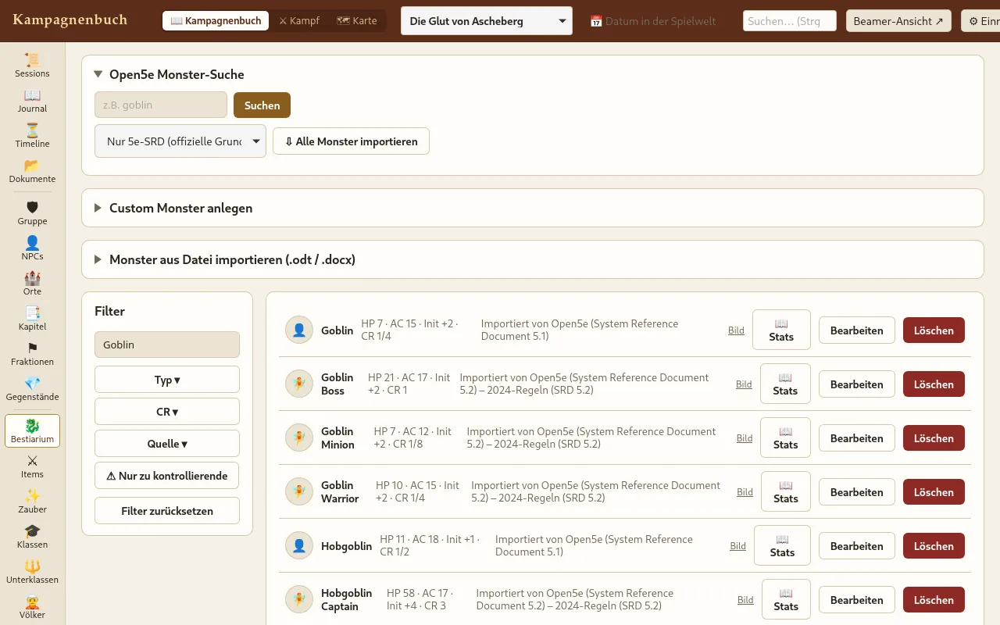
Ansicht für Spieler
Spieler öffnen die Spielerseite auf Handy, Tablet oder Laptop, wählen oben ihren Charakter und sehen das volle Charakterblatt. Trefferpunkte, verbrauchte Zauberplätze, Munition und Rasten ändern sie direkt. ⚔ Kampfreihenfolge blendet die Initiative-Leiste ein. Die Adresse der Spielerseite steht im Combat Tracker unter Anzeige.

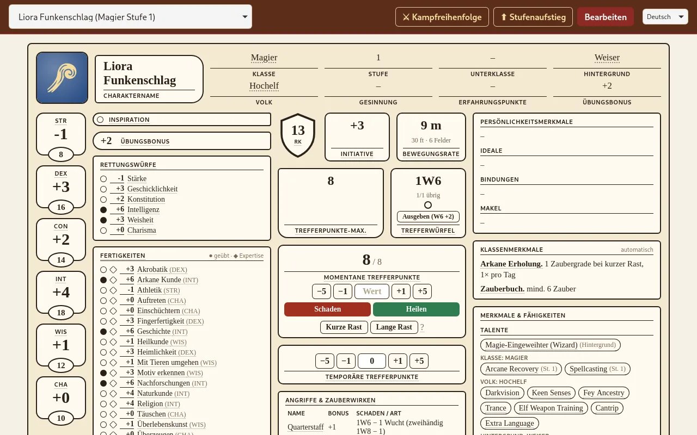
5. Combat Tracker
Der Combat Tracker führt durch Kämpfe. Links stehen die Encounter der Kampagne, rechts der gewählte Encounter mit allen Kämpfern in Initiative-Reihenfolge.

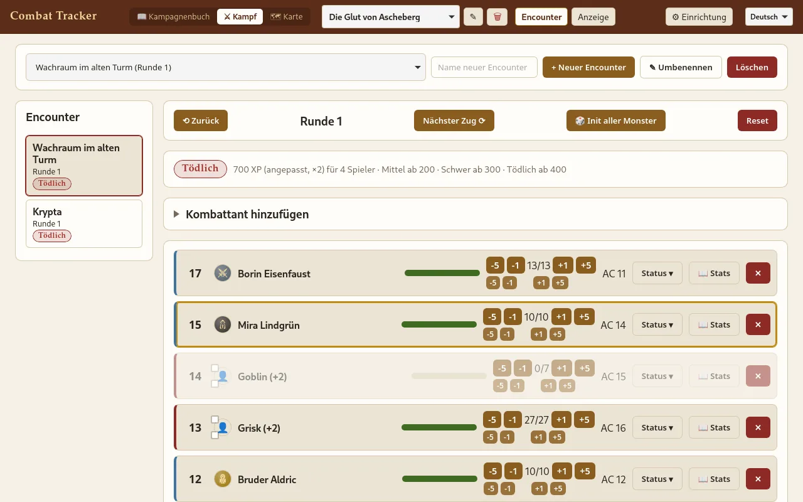
Encounter vorbereiten
- + Neuer Encounter legt einen Encounter an. Die Gruppe ist automatisch dabei.
- Unter Kombattant hinzufügen nimmst du Monster aus dem Bestiarium auf.
- Die Schwierigkeit (leicht bis tödlich) rechnet der Tracker aus Erfahrungspunkten und Gruppengröße live aus.
Den Kampf führen
- Initiative eintragen oder mit 🎲 Init aller Monster für alle Monster würfeln.
- Nächster Zug ⟳ und ⟲ Zurück wechseln den aktiven Kämpfer, die Runde zählt mit.
- Mit −5 −1 +1 +5 änderst du Trefferpunkte und temporäre TP. Bei 0 TP gilt ein Kämpfer als besiegt.
- Status ▾ setzt Zustände wie Vergiftet, Liegend oder Konzentration.
- 📖 Stats klappt den Wertekasten des Monsters auf.
- Für Spieler verborgen hält ein Monster von Anzeige und Beamer fern, bis du es aufdeckst.
Anzeige für die Spieler
Im Reiter Anzeige wählst du, welcher Encounter auf der Spieleranzeige läuft, und findest ihre Adresse. Die Anzeige zeigt die Reihenfolge mit Porträts und markiert, wer am Zug ist.

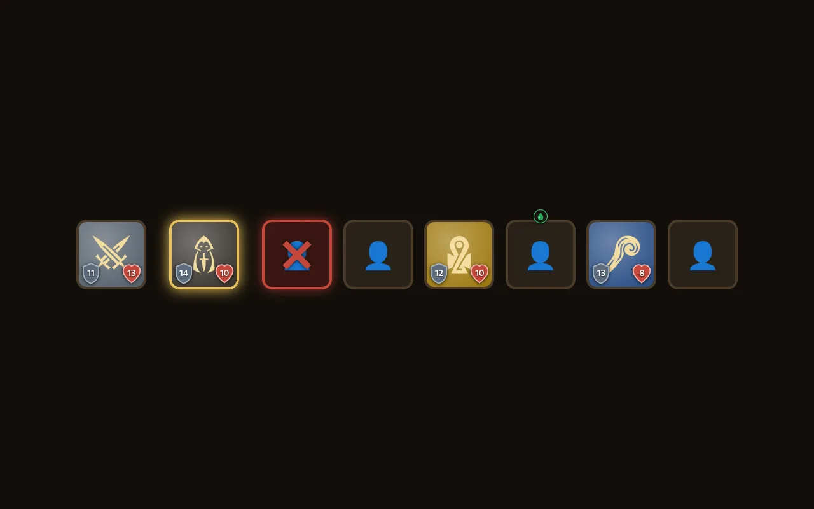
6. Battlemap
Die Battlemap zeigt Karten auf deinem Bildschirm und auf dem Beamer. Links stehen die Bereiche Szenen, Werkzeuge, Sicht, Bereiche, Tokens und Tracker. Ein Klick öffnet den Bereich, ein zweiter schließt ihn. Der gelbe Rahmen zeigt, welcher Ausschnitt gerade auf dem Beamer ist.
Szenen
Eine Szene ist eine Karte. Du legst sie an mit
- + Neue Szene aus Bild: ein beliebiges Kartenbild. Das Raster stellst du unter ⚙ Einrichtung → Raster ein oder misst es mit 📏 auf der Karte.
- + Szene aus Dungeondraft (.dd2vtt): Karte, Raster, Wände und Türen kommen fertig mit (Dungeondraft: Datei → Exportieren → Universal VTT).
Szenen gehören zur gewählten Kampagne. Diese Szene auf Beamer zeigen (in der Einrichtung) schickt sie auf den Beamer.
Nebel des Krieges
Unter Werkzeuge deckst du Teile der Karte mit Rechteck, Pinsel oder Polygon auf und wieder zu. Du siehst die Karte immer ganz, der Nebel ist für dich nur halb durchsichtig. Mit dem Werkzeug Bereich umrandest du Räume, die du später unter Bereiche mit einem Klick aufdeckst.

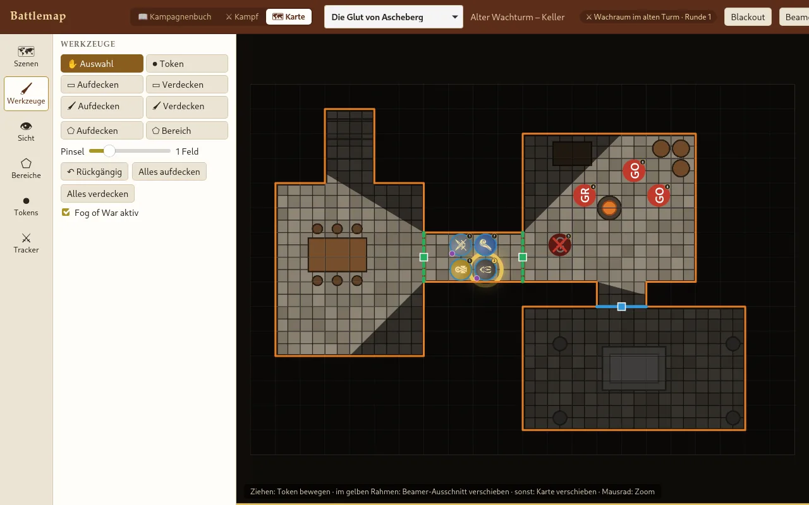
Wände, Türen und Sicht
Unter Sicht zeichnest du Wände und Türen ein (oder sie kommen aus Dungeondraft). Türen öffnest und schließt du mit dem Auswahl-Werkzeug per Klick. Geschlossene Türen und Wände halten die Sicht auf.

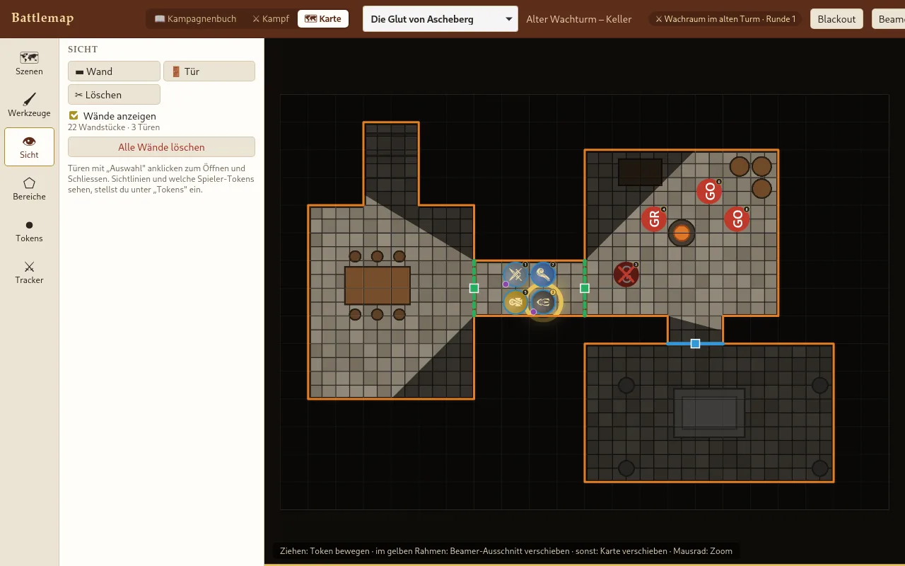
Tokens
Tokens aus Tracker-Encounter setzt für jeden Kämpfer des laufenden Encounters einen Token auf die Karte, mit Porträt. Ein ausgewählter Token hat Name, Größe, Farbe, Bild und eine Verknüpfung zum Tracker. Auf Beamer zeigen ausgeschaltet bedeutet: Auf dem Tisch steht eine echte Miniatur, der Beamer zeigt den Token nicht.
Sichtlinien: Ist Sichtlinien aktiv eingeschaltet, deckt die Karte auf, was die Spieler-Tokens sehen. Welche Tokens sehen, wählst du pro Token mit 👁 Sicht. Das gibt es nur für Tokens von Spielercharakteren und ist anfangs aus. Was einmal gesehen wurde, bleibt als erkundet sichtbar, nur gedimmt.

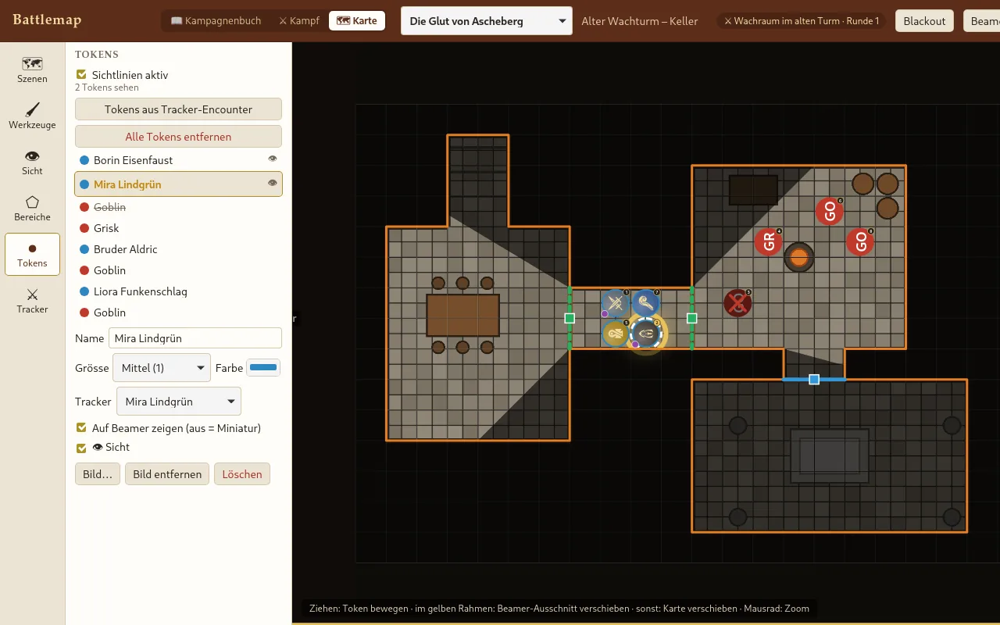
Kampf auf der Karte
Der Bereich Tracker bringt den Combat Tracker in die Karte: Initiative, nächster Zug, Trefferpunkte und Zustände. Ein Klick auf einen Kämpfer klappt TP und Zustände auf und springt zu seinem Token. Spielercharaktere tragen ein kleines Figur-Symbol hinter dem Namen. Auf der Karte zeigt jeder Token seine Position in der Reihenfolge.
Darunter liegen die Zauberbereiche: Kegel, Kreis, Würfel und Linie, auf Wunsch direkt aus einem Zauber (z. B. Fireball).

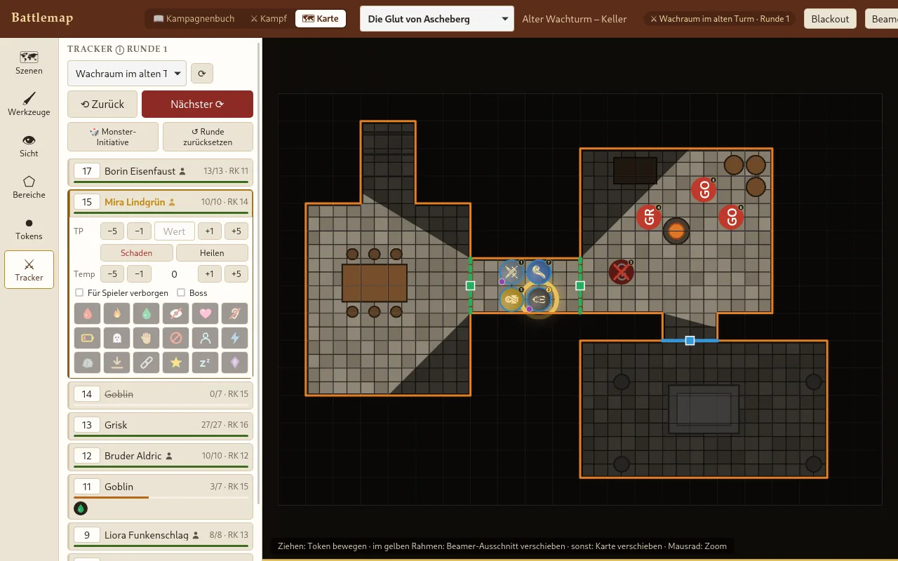
Beamer
Die Beamer-Ansicht öffnest du im Browser des Beamer-Rechners (Knopf Beamer-Ansicht ↗ oben). Ein Klick ins Bild schaltet auf Vollbild. Sie zeigt nur, was aufgedeckt ist, und Tokens nur, wo die Spieler sie sehen können. Links läuft auf Wunsch die Kampfreihenfolge mit.

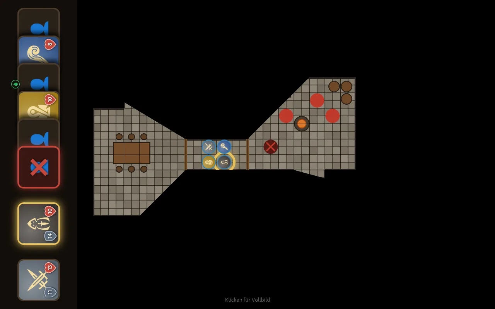
Unter ⚙ Einrichtung der Karte stellst du den Beamer auf den Tisch ein:
- Drehung, wenn der Beamer von der Seite projiziert.
- Kalibrieren: Der Beamer zeigt ein 10 × 10 cm großes Quadrat. Nachmessen und Pixel pro Zoll anpassen, bis ein Feld genau 1 Zoll (2,54 cm) groß ist, passend für Miniaturen.
- Trapezkorrektur: Die Ecken des Beamer-Bilds lassen sich mit der Maus verschieben.
- Blackout (Taste B) schaltet den Beamer schwarz.
- Bild statt Battlemap: ein eigenes Bild, z. B. für Pausen.
7. Charaktererstellung
In der Charaktererstellung bauen Spieler ihre Charaktere selbst, ohne Zugang zum Kampagnenbuch. Sie läuft getrennt und tauscht Daten nur über Dateien aus.
Für die Spielleitung: einrichten
Die Verwaltung (/admin/) ist mit einem Passwort geschützt.
- Inhalte hochladen: Im Kampagnenbuch unter ⚙ Einrichtung → Charaktererstellung → ⬇ Charakterinhalte exportieren die Datei speichern und in der Verwaltung unter Inhalte hochladen. Damit kennt die Charaktererstellung deine Klassen, Völker, Hintergründe, Gegenstände und Zauber.
- Kampagne anlegen: Jede Kampagne bekommt einen eigenen Link für Spieler, auf Wunsch mit Passwort. Diesen Link schickst du der Gruppe.
- Termine: Optional schlägst du Spieltermine vor, die Spieler stimmen ab.

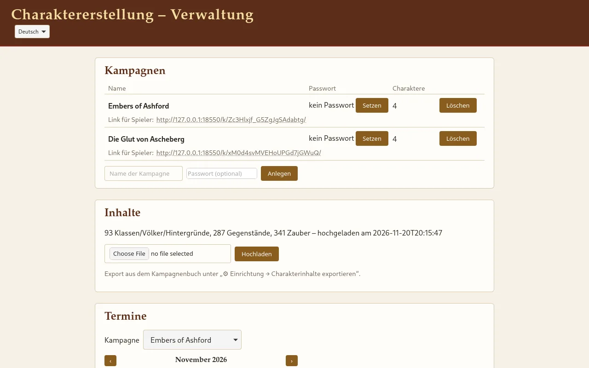
Für Spieler: einen Charakter erstellen
Über den Link sehen Spieler die Charaktere ihrer Kampagne. Name des Charakters und eigener Name eintragen, dann + Neuen Charakter anlegen.

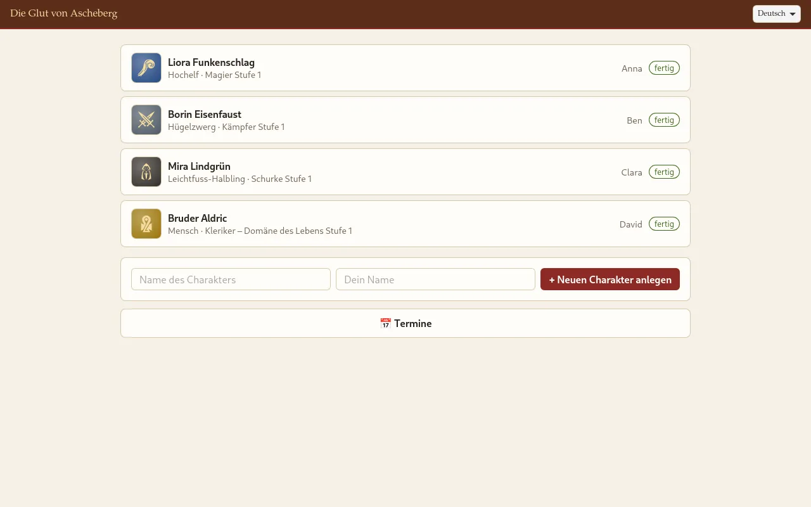
Ein Assistent führt durch alle Schritte: Volk, Klasse, Hintergrund, Talente, Attribute, Fertigkeiten, Sprachen, Zauber, Ausrüstung. Was Volk, Klasse und Hintergrund vorgeben, ist schon eingetragen. Unten steht jeweils, was noch fehlt. Weiter geht erst, wenn der Schritt vollständig ist.

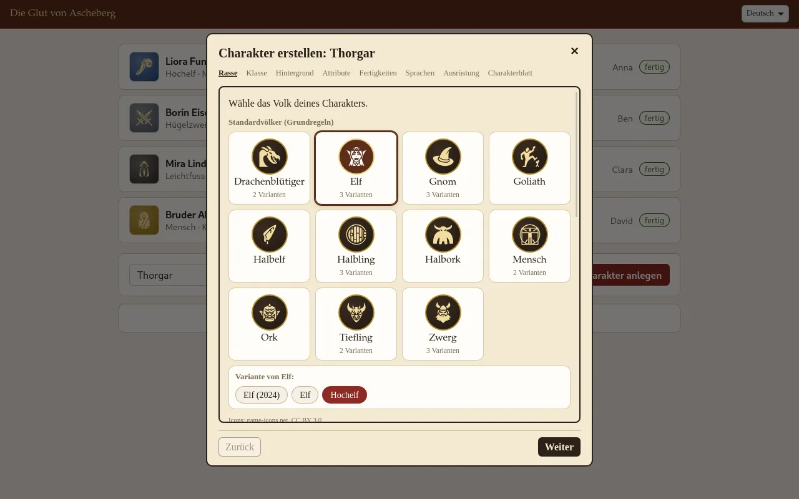

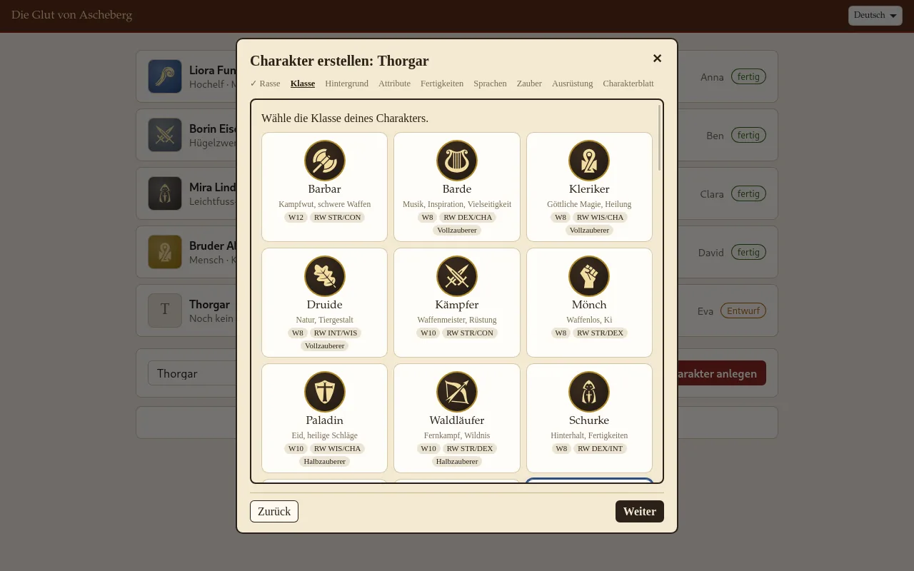
Am Ende steht das fertige Charakterblatt. Spieler können es jederzeit wieder öffnen, bearbeiten, ein Porträt hochladen und später mit ⬆ Stufenaufstieg aufsteigen. Mit ✓ Als fertig melden ist der Charakter bereit für die Übernahme.

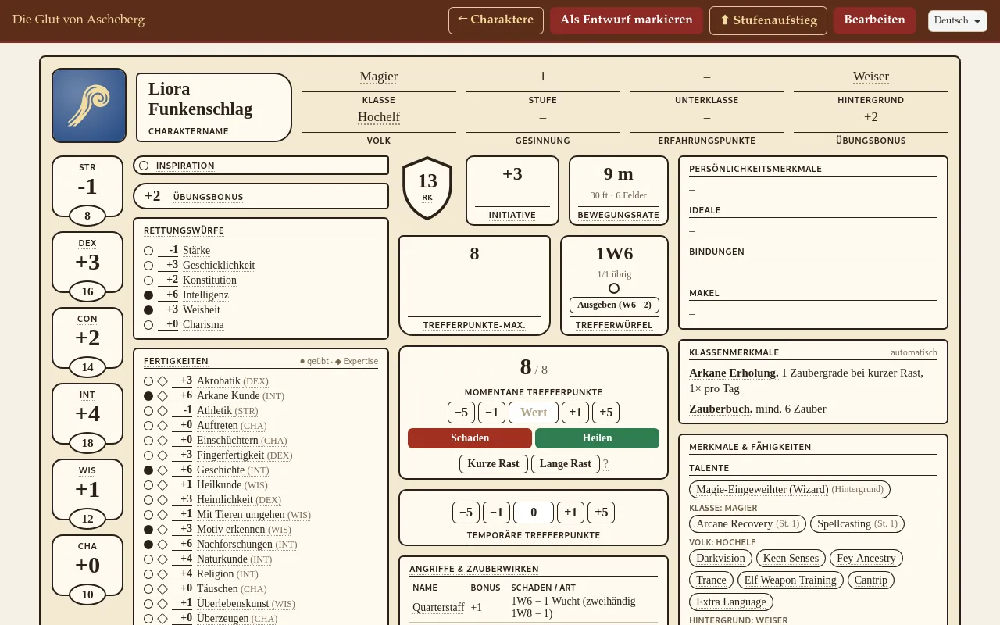
Charaktere ins Kampagnenbuch übernehmen
- In der Verwaltung Fertige Charaktere exportieren.
- Im Kampagnenbuch unter ⚙ Einrichtung → Charaktererstellung → ⬆ Charaktere importieren die Datei wählen.
Die Charaktere erscheinen unter Gruppe, mit Startausrüstung und Porträt. Gibt es einen Namen schon, fragt der Import nach: überspringen, Charakterblatt ersetzen oder als Kopie anlegen.
8. Daten und Sicherung
Unter ⚙ Einrichtung → Datensicherung im Kampagnenbuch:
- ⬇ Sicherung herunterladen: Datenbank und alle Bilder (Uploads, Karten, Tokens, Beamer-Bilder) als eine ZIP-Datei.
- ⬆ Sicherung wiederherstellen: ersetzt alle Daten durch den Stand der Sicherung.
Zusätzlich legt Wyrmdesk regelmäßig automatische Sicherungen an. Combat Tracker und Battlemap gehören zur selben Datenbank und sind darin enthalten.

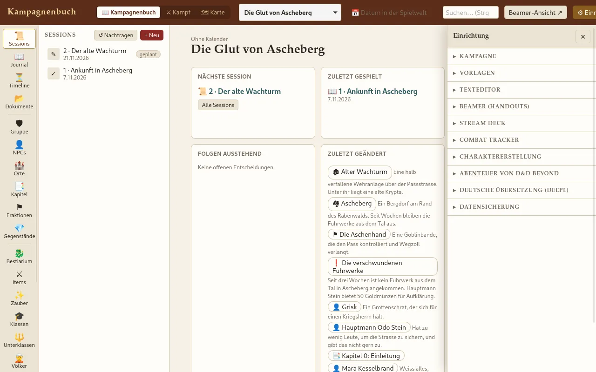
Vorlagen
⚙ Einrichtung → Vorlagen → Kampagne als Vorlage sichern… legt einen Schnappschuss der Kampagne an, mit Einträgen, Sessions, Encountern und Karten. Daraus startest du dieselbe Kampagne beliebig oft mit einer neuen Gruppe, auf Wunsch mit zurückgesetztem Spielstand.
9. Tipps
| Wo | Taste | Wirkung |
|---|---|---|
| Battlemap | B | Beamer schwarz schalten |
| Battlemap | N / Shift+N | Nächster / vorheriger Zug |
| Battlemap | V T R P W D | Auswahl, Token, Rechteck, Pinsel, Wand, Tür |
| Battlemap | Strg+Z | Nebel: letzten Schritt zurück |
| Beamer | F11 / Klick | Vollbild |
| Kampagnenbuch | [[ | Verweis auf einen Eintrag einfügen |
- Unterstrichene Begriffe auf dem Charakterblatt zeigen beim Antippen eine Erklärung.
- Die Suche oben im Kampagnenbuch findet Einträge, Sessions und Texte der ganzen Kampagne.
- Die Sprache gilt pro Browser. Beamer und Spieleranzeigen folgen dem Browser, in dem sie laufen.